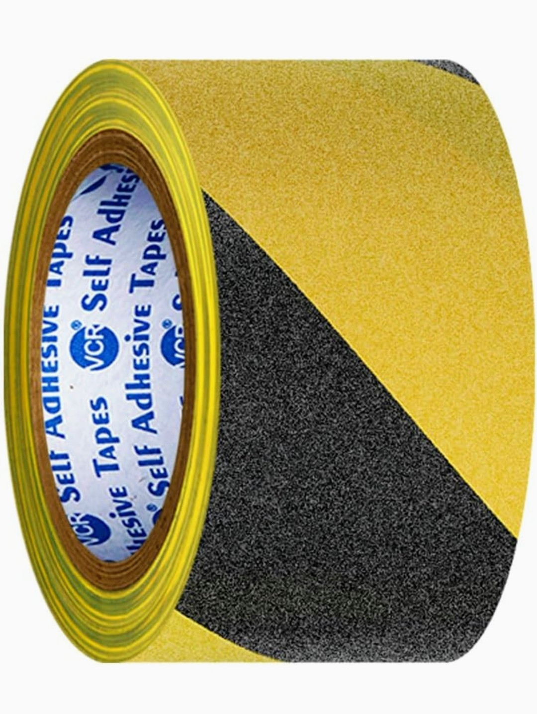
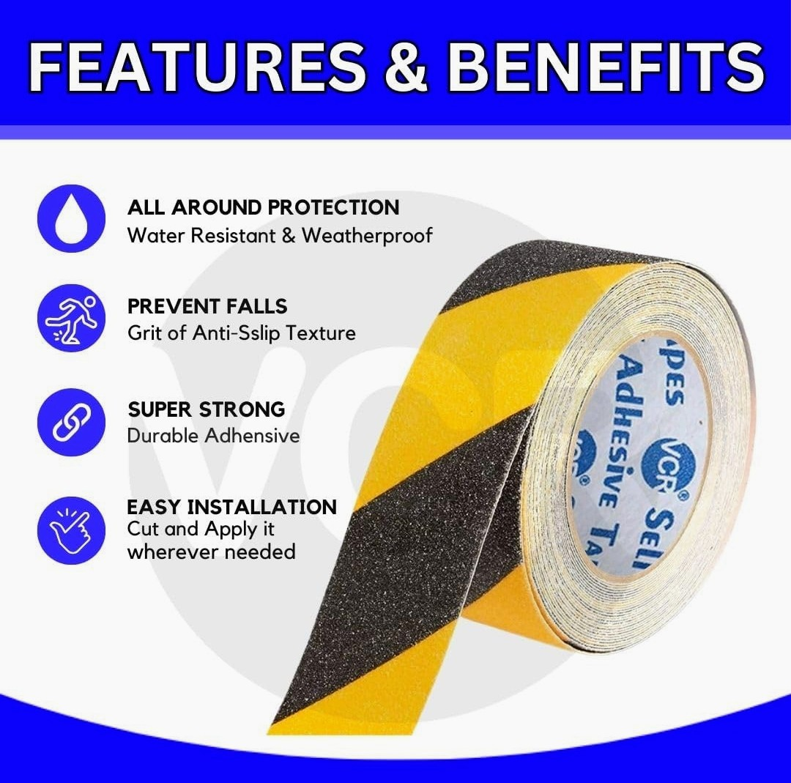
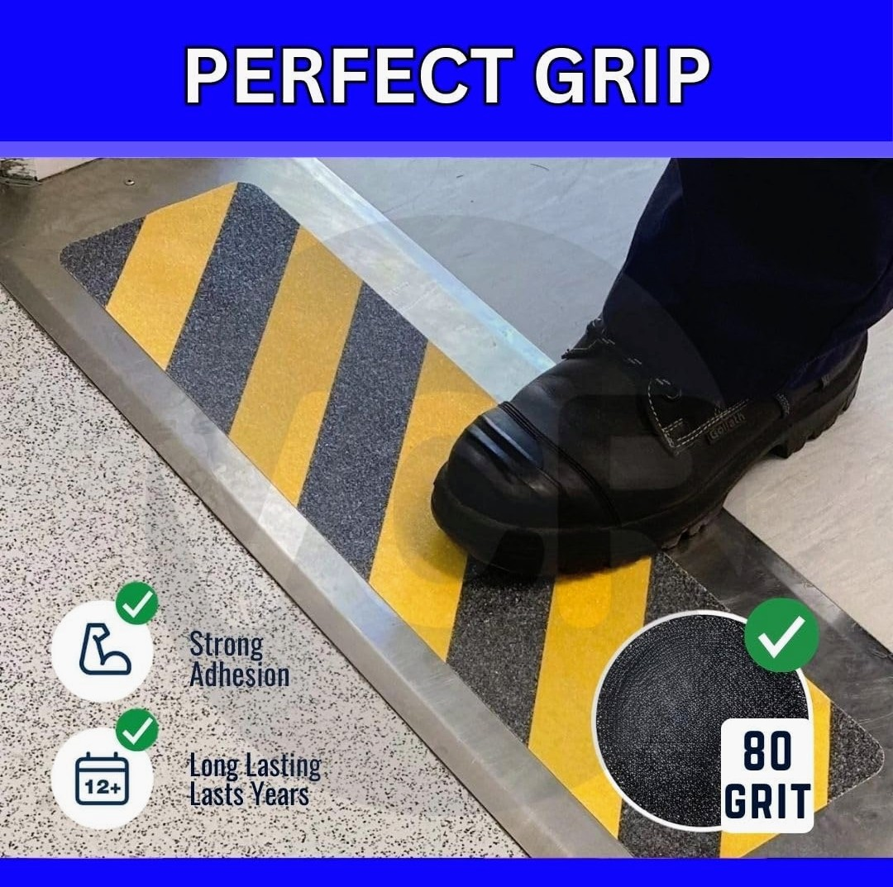
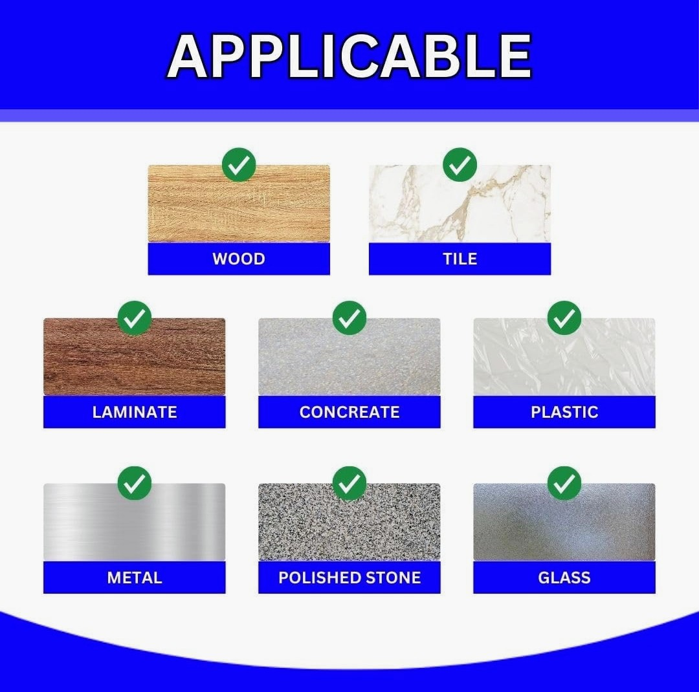
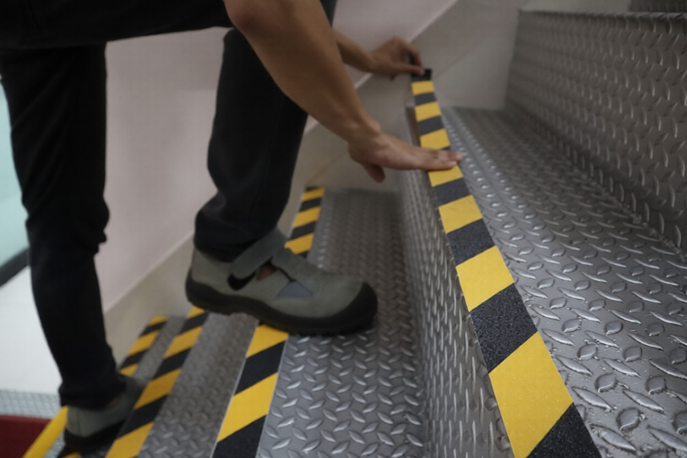
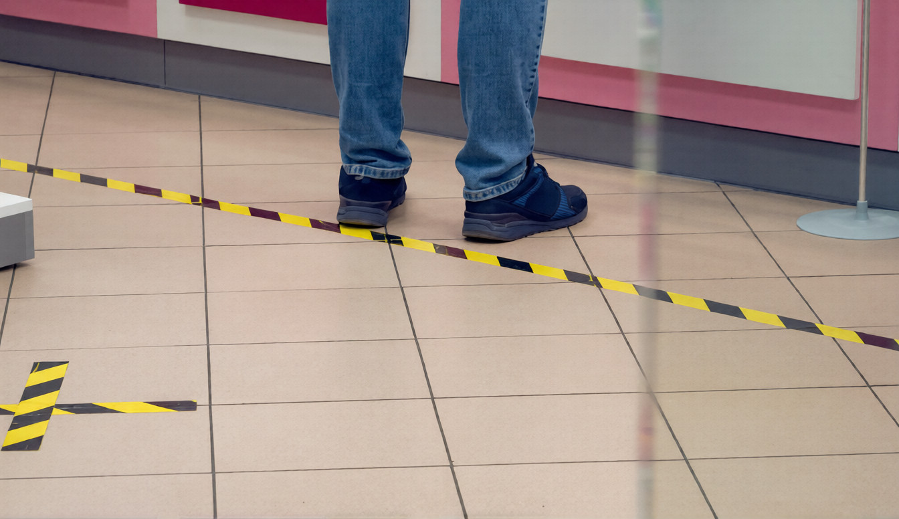
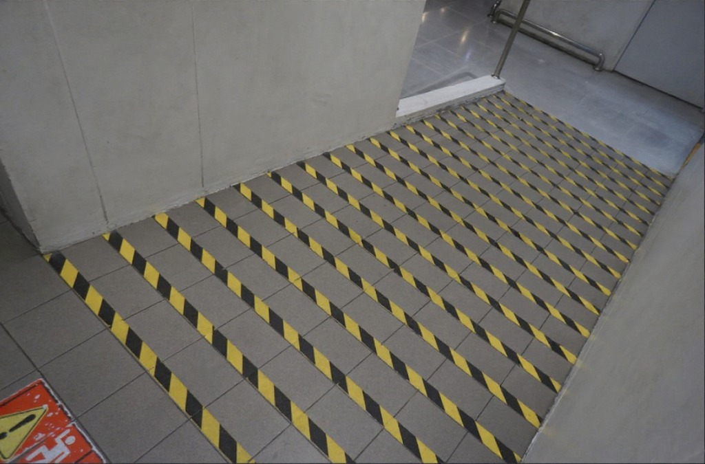

Durable, high-visibility floor marking tapes designed to reduce slipping hazards and improve workplace safety in industrial and commercial environments.








Anti Skid Floor Marking Tape is designed to provide excellent slip resistance while clearly marking hazardous or designated areas. The textured surface improves traction and helps prevent accidents in high foot-traffic and industrial environments.
These tapes are easy to apply on clean, dry surfaces and are suitable for both indoor and outdoor use. They are commonly used in factories, warehouses, stairways, ramps, and commercial spaces.
Surface must be cleaned thoroughly before application. For Indian conditions, wider tapes are recommended in monsoon-prone or high-dust environments.